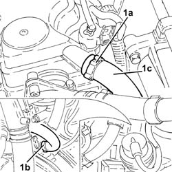

1080D20 oil vapour pipe from cam cover to rngine block r r
- Path
- Procedures > 10 ENGINE > 1080 EMISSION CONTROL SYSTEM > 1080D crankcase vapour/gas recirculation system > 1080D20 oil vapour pipe from cam cover to rngine block r r
- Kind
- repair procedure (removal / refitting; the operation number is the code)
- Applies to
- all engines; all production periods
- Interactive page
- https://sloeber94.github.io/elrnDB-fDbl/en/#/2584509
Applies to: all engines; all production periods
 Removing
Removing
 Refitting
RefittingProceed with the removal 5520B10 starter motor - r+r .
1. Loosen the bands (1a) and (1b) and remove the oil vapour recovery pipe from cam cover to crankcase (1b).

Applies to: all engines; all production periods
Refitting
RemovingRefit the oil vapour recovery pipe from cam cover to crankcase and secure with bands.
Proceed with the refitting 5520B10 starter motor - r+r .